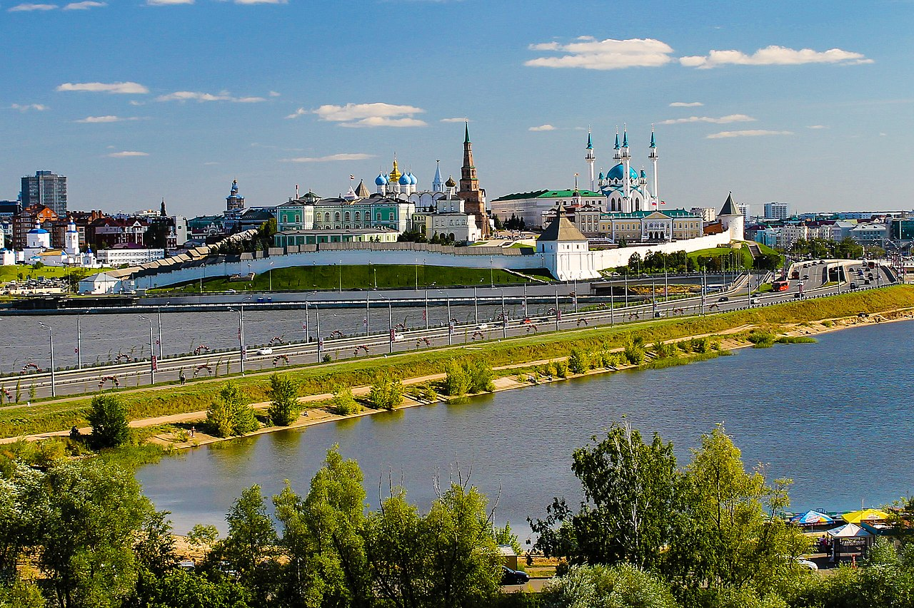
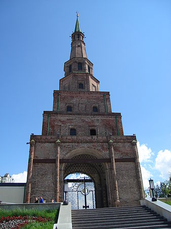
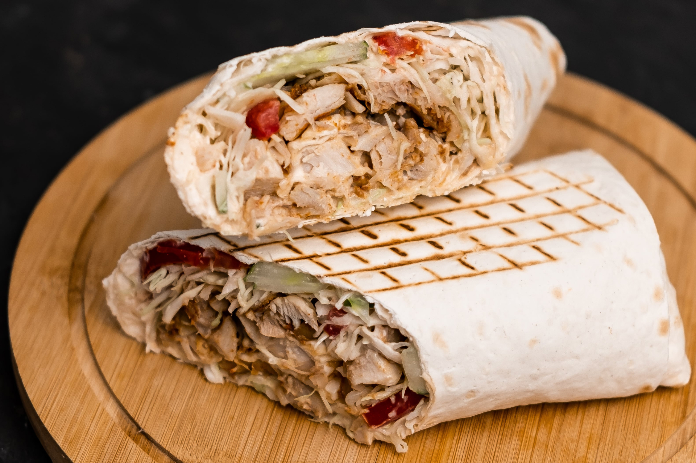
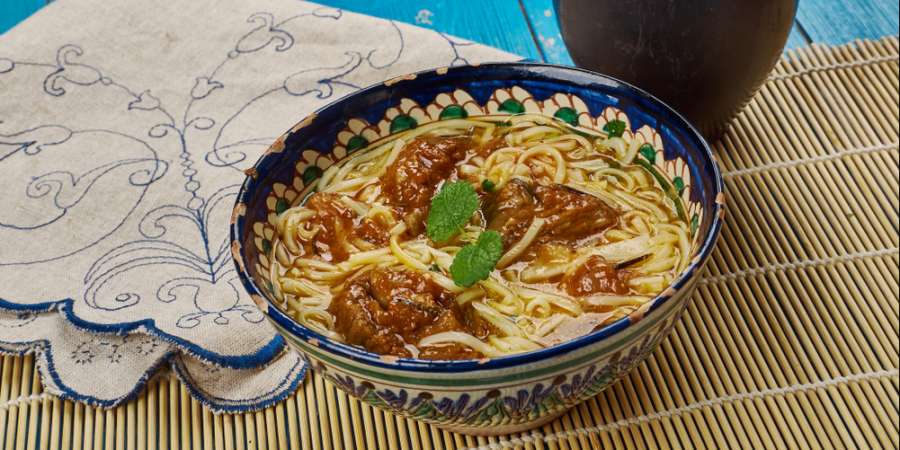

Достопримечательности

Кремль
Это главный замок Татарстана, расположенный в столице Казани, в 2000 году он стал объектом Всемирного наследия.
Ба́шня Сююмбикэ́
Также известная как Ханская мечеть, когда-то это было самое высокое здание Казанского Кремля, и в 1930-х и 1990-х годах для выпрямления башни использовались различные методы.


шаурма↑
ближневосточное блюдо из мяса (курица, ягнятина, баранина, реже — свинина), обжаренного на вертеле, завёрнутого в лаваш или питу, с добавлением капусты, свежего огурца, репчатого лука, чесночного соуса и, по желанию, специй.
Докмач↑
Это традиционный суп с лапшой, который можно приготовить на любой суповой основе — мясном, рыбном, овощном или даже грибном. Основной ингредиент – лапша – остался прежним.